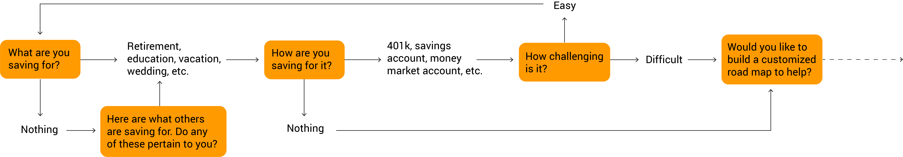
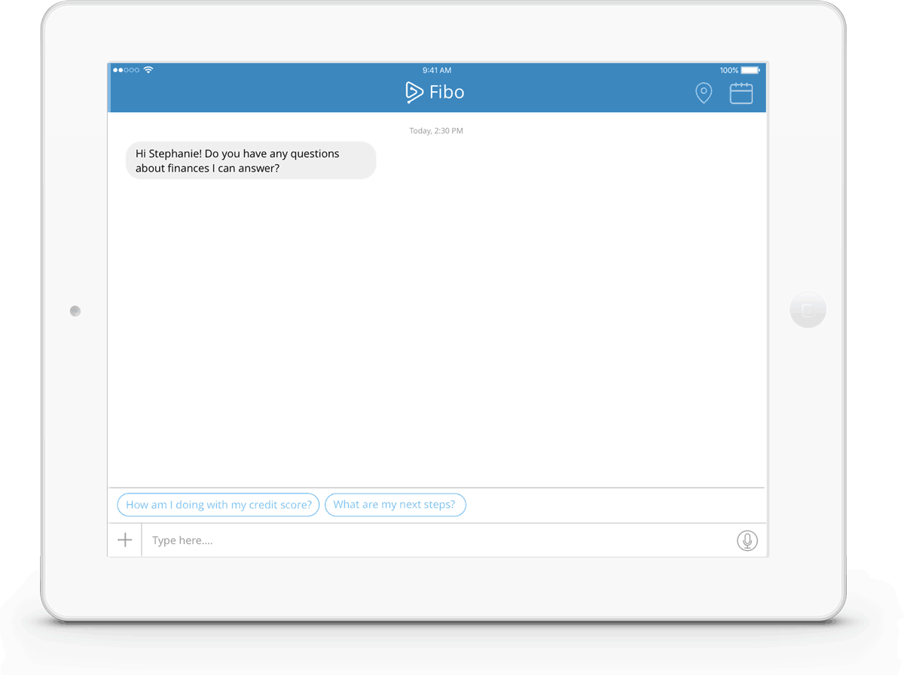
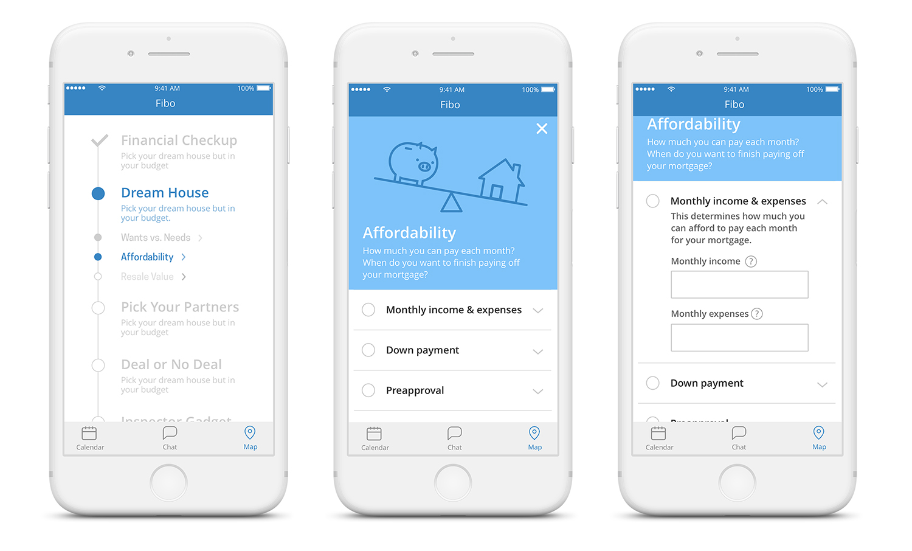

Building trust to foster long term customer relationships
Fibo is a personal financial assistant that answers any and all questions, helps manage long term goals, and connects customers with financial specialists. Fibo encourages and nurtures long term relationships between customers and their primary bank.

A client in the financial sector was looking to strengthen long term relationships with mass affluent customers. One particular issue was that many cutomers have accounts with multiple institutions. As such, it was necessary to understand what the customer's goals are and align them with the bank's.
Based on research provided by the client, my team and I identified three hypotheses regarding mass affluent customers:
1. Customers don’t always feel comfortable asking questions or reaching out for help.They many not want to appear uninformed or might be unaware of their information gap and, as a result, do not ask for help.
2. Customers lead busy lives and don’t always have dedicated time for long term financial planning.
Many are experts at day to day budgeting find long term planning intimidating or time consuming.
3. Customers have trouble starting and sticking to long term goals.
Customers may be discouraged by feeling intimidated by large goals and give up before even beginning.
We also identified that transparent communication and interactions can build trust, encouraging a mutually beneficial long term relationship between a financial institution and their customers. Our solution needed to create an environment where customers actively and willingly seek out their financial institution, giving the institution an opportunity to assist the customer and provide and positive experience.
Long term goals are the perfect catalyst for building strong relationships– they require time, information to be shared, and reward both parties. In order to teach customers how to set and achieve long term goals, we constructed a list of questions to guide our design process.
1. How can customers identify and bridge knowledge gaps?
Independently recognizing gaps in their knowledge helps customers own their learning. Bridging these gaps can encourage confident decision making.
2. How can visualization act as a motivator?
Customers usually have an idea of a goal they want to achieve, but if it’s too vague, it is difficult to begin to work towards the goal. Being able to describe what a goal specifically entails can lead to the creation of actionable steps.
3. How can scaffolding be used as a call to action?
Scaffolding breaks down a large goal into smaller, manageable steps. Focusing on short term goals is less intimidating. Each small success provides a sense of accomplishment and improves the expectancy of the customer.
4. How can extrinsic motivation be developed and then transformed into intrinsic motivation?
Extrinsic motivation involves an outside reward or punishment, whereas intrinsic motivation is independent of outside influences. Intrinsic motivation is more sustainable over time. Attainment value, or satisfaction from completing of goal, is an intrinsic value that should be developed in learners.
We constructed a diagram to visualize the method to build a relatioship with the customer, keeping in mind that different customers will have slightly different paths (some may require more or less onboarding).

We felt that flexibility and customization were especially important and chose to build a virtual assistant to account for customers' different goals, life stages, prior knowledge, and more. Early medium iterations included an email based coach, a smart quiz or personality test, and a voice based assistant. We chose to focus on a conversational interface, as a familiar form reduces complexity and encourages confidence.

Our next steps involved designing the script for the customer's first interaction with Fibo.
It was also important to consider how the relationship with Fibo may evolve over time– customers may become more financially savvy and their needs will change over time.
We also wanted Fibo to act as a liason between customers and the staff and services that the client offers. Conversations with the client revealed that customers using their financial advisor services were primarily referred by bank staff. Customers often feel "unworthy" of a financial advisor and don't reach out to access such services. Fibo eliminates this barrier by referring customers to specialist when the time is right.
Fibo prompts customers to consider what their long term goals might be and assists customers in building out a plan. Customers primarily interact with Fibo through a chat interface, but the app includes a goal map, to lay out the steps to achieving the goal, and calendar, to keep track of any deadlines or checkpoints. By clearly laying out the steps to needed to reach a long term goal, Fibo helps customers feel empowered to stick to and achieve their goals.
